YOU?
We’re looking for team players, who are passionate and keen to learn. Programmers, hackers, who program even in their free time. Because they think it’s fun. But also people who want to and can make a difference. Professionals who go for results, but never at the expense of quality. Pioneers who are not afraid to step out of their comfort zone to explore new avenues. Functional. Reactive. Full Stack.
Scala
See also thejunior Scala vacancy
Programming with your heart and mind
Client case:The port of Rotterdam as a greenfield project. Together with a team of Codestar colleagues, you will make a difference for the port operator on the technology front. By innovating with functional programming, reactive streams, cloud native and machine learning. To manage data waves around vessels and realise real-time data streams. Via Scala, Play, Akka, Kafka, Spark, RX, Angular2 and React. Making Rotterdam the smartest port in the world.
#WhyWithCodestar
We are creating the new world of fast and streaming data , with scalable and reactive apps that respond to complex challenges. We do this by programming with our hearts and minds. That’s how we make the difference for clients looking to take the next step. In a corporate culture driven by continuous learning, teamwork and programming. With R&D days, Campus Fridays and team weekends with top international coaches. We are the #1 company for Full Stack Scala and Fast Data solutions in the Netherlands.
#WhoAreYou?
We’re looking team players who are for passionate and keen to learn. Programmers, hackers, who program even in their free time. Simply because they’re curious. Professionals who can make the difference, by coming up with ground-breaking ideas. Professionals who go for results, but never at the expense of quality. And who can also convince clients that this is the right way to go. And who are not afraid to make mistakes. Because innovation is all about trial and error. Functional. Reactive. Full Stack.
- Academic mindset
- A track record in Scala Development
#ThisIsWhatYouEarn
We will do everything we can to optimise your growth. So you can become a master in your field.
- Latest Macbook or Microsoft Surface:you decide how you want to work.
- R&D days in Nieuwegein: focus on topics you want to become an expert in.
- Campus Fridays:work in an office with colleagues who will help you if you get stuck, and inspire you with their projects and code.
- 1 top conference abroad: for the inspiration to be a frontrunner.
- 2 Codecamps per year with top coaches: in the living room of a holiday home, so we can decide when the course day is over and the beach BBQ can begin as soon as we finish.
- Fixed contract: our commitment to your growth to master.
#FindOutMore
Want to know more about our Scala home? We’d like to tell you in person. So if you want to get to know us a bit better, join one of our training sessions or events. We organise these on a regular basis and they’re open for everyone, for free. Or just make an appointment. Feel free to send our business unit manager an email: codestar@ordina.nl
We are only interested in candidates that are currently living in the Netherlands.
Acquisition on the basis of this vacancy is not appreciated.
Junior Scala
See also theexperienced Scala vacancy
Programming with heart and mind
Client case: We’re looking for a Scala talent for our greenfield project in the port of Rotterdam. Someone who wants to join our team making a difference at Rotterdam Logistics Lab - the port’s innovation incubator. By realising real-time data streams with functional programming, reactive streams, cloud native and machine learning. Via Scala, Play, Akka, Kafka, Spark, RX, Angular2 and React. Will you be the new expert in the Scala ecosystem?
#WhyWithCodestar
You will work with back-end stream-processing, learn reactive front-end programming and go on trips into the world of Big Data. In a team focused on fast and streaming data. You’ll do this through programming with heart and mind for clients who want to take the next step. In a corporate culture driven by continuous learning, teamwork and programming. With R&D days, Campus Fridays and team weekends with top international coaches. Become a part of the #1 company for Full Stack Scala and Fast Data solutions in the Netherlands.
#WhoAreYou?
We’re looking for team players who are passionate and keen to learn. Juniors who program even in their free time, because they’re curious. Juniors who want to make the difference by coming up with ground-breaking ideas. Who go for results, but never at the expense of quality. And who are not afraid to make mistakes. Because innovation is all about trial and error. Functional. Reactive. Full Stack.
- Academic mindset
- Experience in functional programming, Scala or Haskell
#ThisIsWhatYouEarn
We will do everything we can to optimise your growth. So you can become a master in your field.
- Latest Macbook or Microsoft Surface:you decide how you want to work.
- R&D days in Nieuwegein: focus on topics you want to become an expert in.
- Campus Fridays:work in an office with colleagues who will help you if you get stuck, and inspire you with their projects and code.
- 1 top conference abroad: for the inspiration to be a frontrunner.
- 2 Codecamps per year with top coaches: in the living room of a holiday home, so we can decide when the course day is over and the beach BBQ can begin as soon as we finish.
- Fixed contract: our commitment to your growth to master.
#FindOutMore
Want to know more about our Scala home? We’d like to tell you in person. So if you want to get to know us a bit better, join one of our training sessions or events. We organise these on a regular basis and they’re open for everyone, for free. Or just make an appointment. Feel free to send our business unit manager an email: codestar@ordina.nl
We are only interested in candidates that are currently living in the Netherlands.
Acquisition on the basis of this vacancy is not appreciated.
FRONT-END DEVELOPER
Programming with heart and mind
Client case: The port of Rotterdam as a greenfield project. Together with a team of Codestar colleagues, you will make a difference for the port operator in the field of front-end technology. You will do this by creating a dashboard with reactive elements, from scratch. And you and your team decide on the front-end architecture and design continuous deployment, using Angular, TypeScript, React Native, RxJs and Redux. Making Rotterdam the smartest port in the world.
#WhyWithCodestar
JavaScript: the key to single-page applications that adapt dynamically to modern users. Why we are successful in this? Because we have professional experts in functional reactive programming and smart cooperation between Front-end Developers, top players in Scala, clients and the rest of the agile team. All in an informal setting, in a culture of continuous learning that prioritises your development. With R&D days, Campus Fridays and weekends with top international coaches. Let’s become the benchmark together.
#WhoAreYou?
We’re looking for team players who are passionate and keen to learn. Proactive specialists who want to prove themselves by designing and building JavaScript apps. Specialists who for results, but never at the expense of quality. And who possess good people skills, because a day is consists of more than just programming. Innovation is a team effort. It’s a matter of listening, asking questions and working together, in a multidisciplinary environment.
- Academic mindset
- A track record in JavaScript engineering
- Knowledge of functional reactive programming and/or MV* frameworks
- Experience with TypeScript or other typed JavaScript variants (a big plus)
#ThisIsWhatYouEarn
We will do everything we can to optimise your growth. So you can become a master in your field.
- Latest Macbook or Microsoft Surface: you decide how you want to work.
- R&D days in Nieuwegein: focus on topics you want to become an expert in.
- Campus Fridays: work in an office with colleagues who will help you if you get stuck, and inspire you with their projects and code.
- 1 top conference abroad: for the inspiration to be a frontrunner.
- 2 Codecamps per year with top coaches: in the living room of a holiday home, so we can decide when the course day is over and the beach BBQ can begin as soon as we finish.
- Fixed contract: our commitment to your growth to master.
#FindOutMore
Want to know more about our Scala home? We’d like to tell you in person. So if you want to get to know us a bit better, join one of our training sessions or events. We organise these on a regular basis and they’re open for everyone, for free. Or just make an appointment. Feel free to send our business unit manager an email: codestar@ordina.nl.
We are only interested in candidates that are currently living in the Netherlands.
Acquisition on the basis of this vacancy is not appreciated.
BIG DATA ENGINEER
Programming with heart and mind
Client case: Pyeongchang, South Korea - 2018. The world is watching the Winter Olympics. Skiing, ice skating and bobsleighing: everything is being streamed online. It’s also being broadcast by a major American TV network. Gracenote and Codestar engineers are building a new platform to enrich these live streams with real-time information of interim times, provisional standings, video logs and athletes’ biographies. And we are doing using real-time stream processing technologies, such as Kafka en Akka. For a gold medal in viewing experience.
#WhyWithCodestar
Big, fast & smart data. We excel in real-time data platforms and reactive apps, by programming with heart and mind in multidisciplinary, agile teams in an informal setting. Simply getting the most out of big data, together. Why do we excel at that? Because of our culture of continuous learning, in which we prioritise your development. With R&D days, Campus Fridays and weekends with top international coaches. Welcome. We are the #1 company for Full Stack Scala and Fast Data solutions in the Netherlands.
#WhoAreYou?
We’re looking for team players who are passionate and keen to learn. Professionals who can speak the different languages in a multidisciplinary team, who want to use their Scala skills or strong Java background to tame the ever larger data waves. Professionals who have the ambition to create a real-time data world with their colleagues. Something society can really benefit from. Fast. Reactive. Stream processing.
- Academic mindset
- Polyglot programmer (Scala, Java, Python, ...)
- Knowledge of Spark, Kafka, Hadoop, Cassandra, SQL, ElasticSearch, Airflow
- Experience with distributed systems, microservices, databases and NoSQL technologies
#ThisIsWhatYouEarn
We will do everything we can to optimise your growth. So you can become a master in your field.
- Latest Macbook or Microsoft Surface: you decide how you want to work.
- R&D days in Nieuwegein: focus on topics you want to become an expert in.
- Campus Fridays: work in an office with colleagues who will help you if you get stuck, and inspire you with their projects and code.
- 1 top conference abroad: for the inspiration to be a frontrunner.
- 2 Codecamps per year with top coaches: in the living room of a holiday home, so we can decide when the course day is over and the beach BBQ can begin as soon as we finish.
- Fixed contract: our commitment to your growth to master.
#FindOutMore
Want to know more about our Scala home? We’d like to tell you in person. So if you want to get to know us a bit better, join one of our training sessions or events. We organise these on a regular basis and they’re open for everyone, for free. Or just make an appointment. Feel free to send our business unit manager an email: codestar@ordina.nl.
We are only interested in candidates that are currently living in the Netherlands.
Acquisition on the basis of this vacancy is not appreciated.

Videos
We
Our Moments
 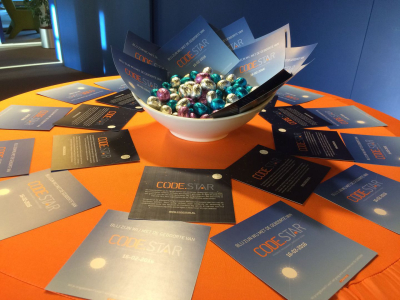
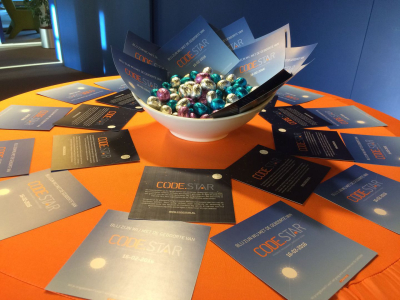
 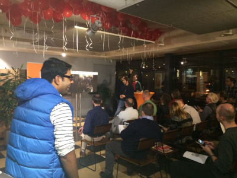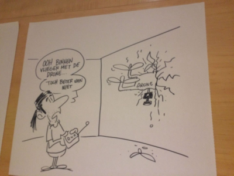
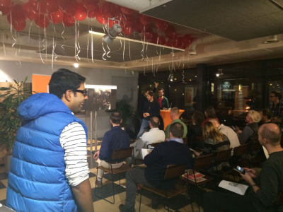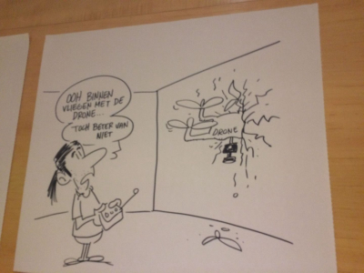 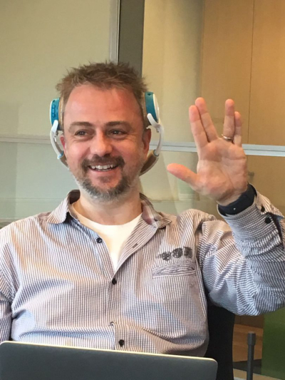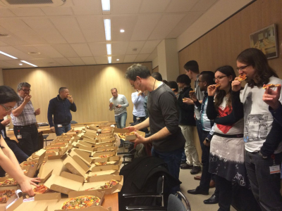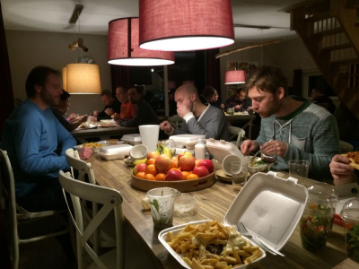
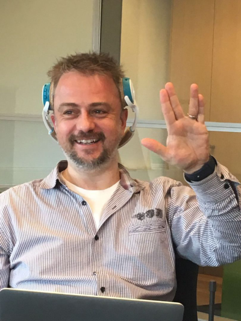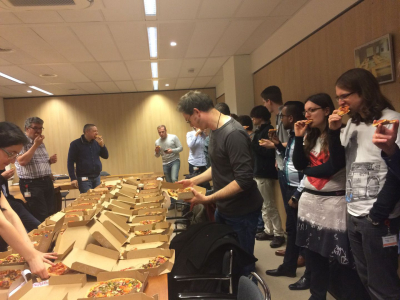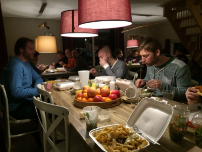


 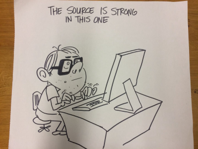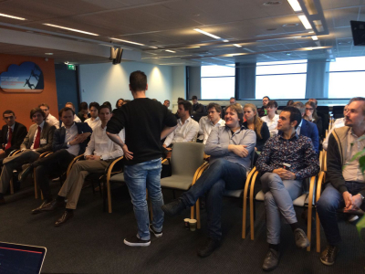
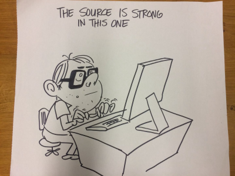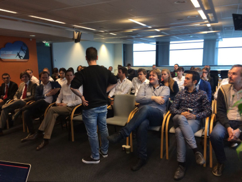 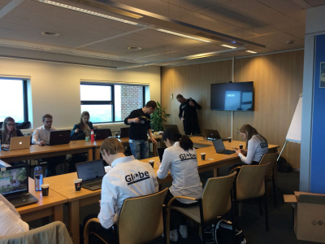
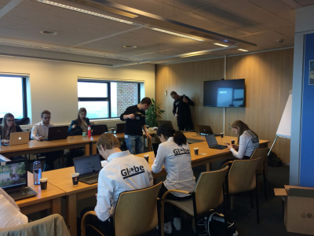 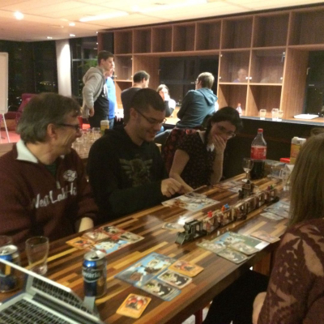
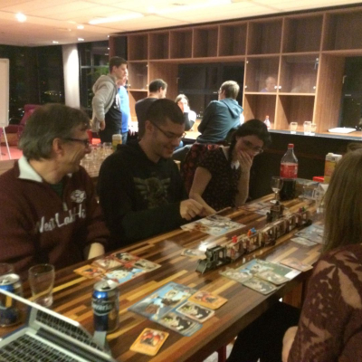Launch Event
 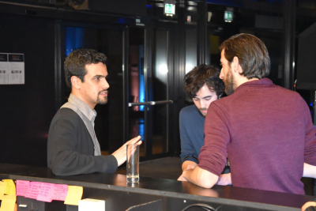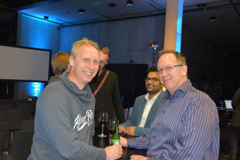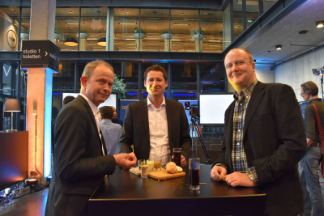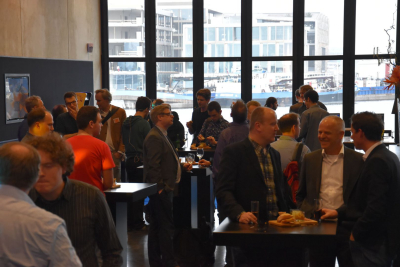
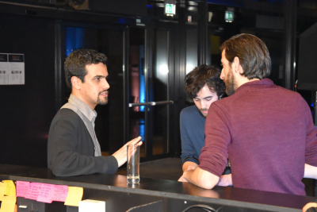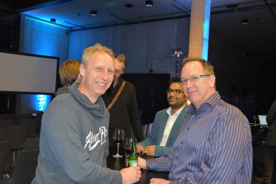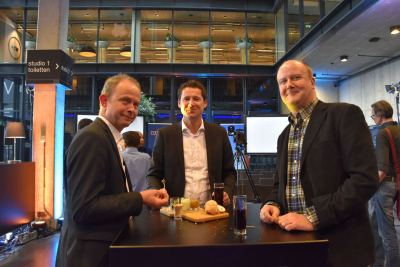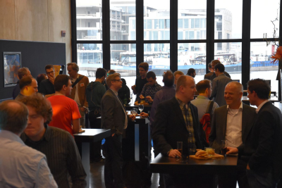
 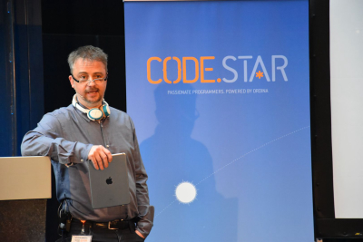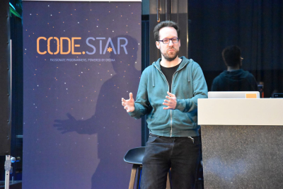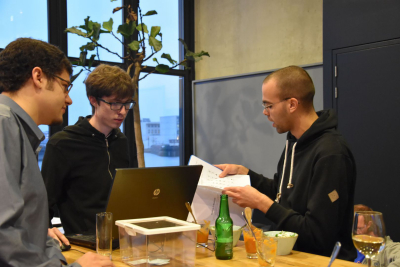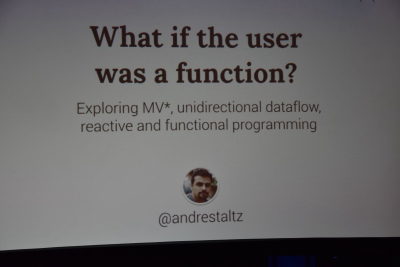
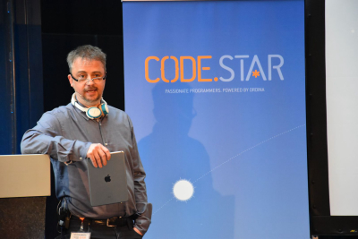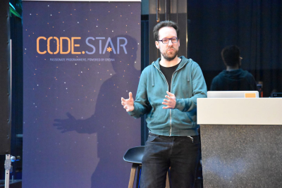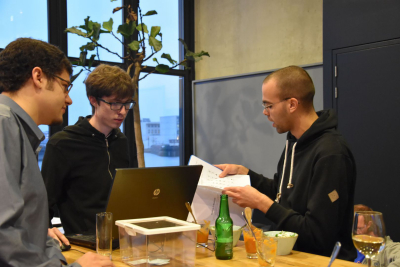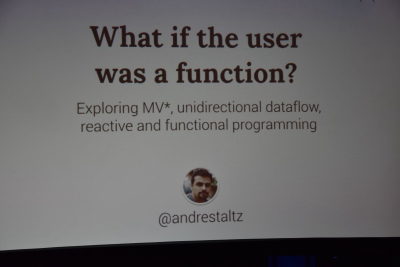 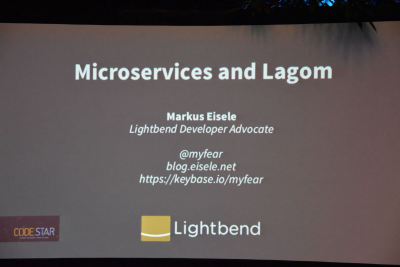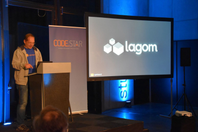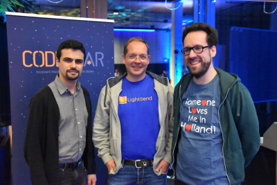
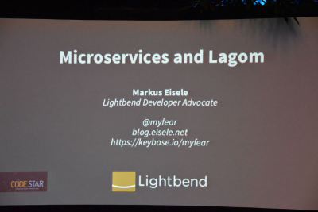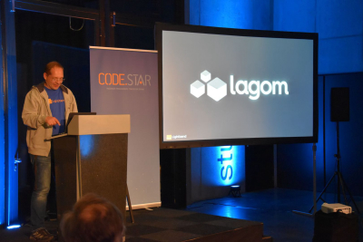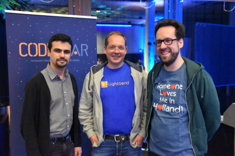 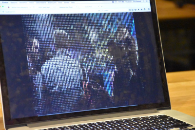
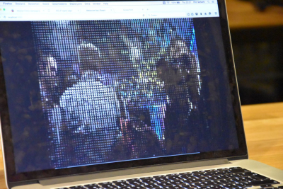


Akkathon
 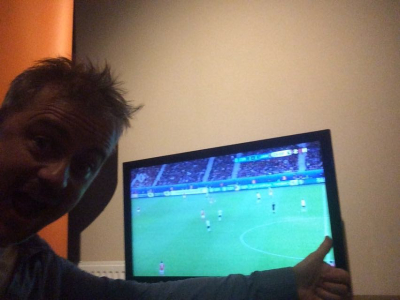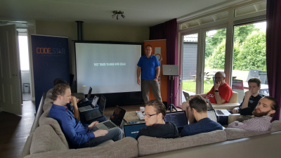
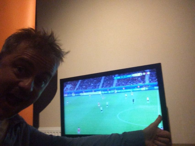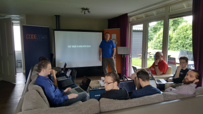 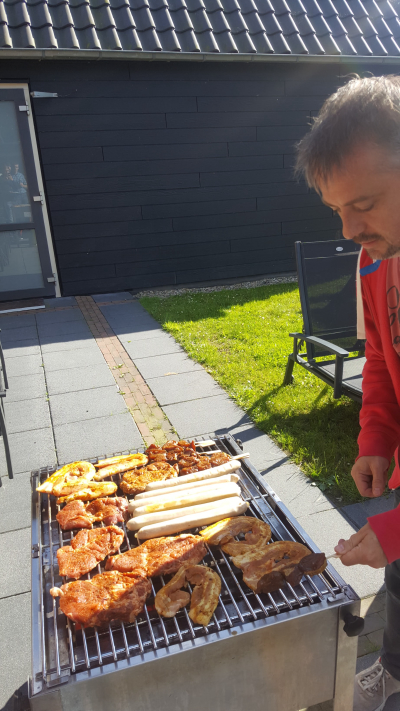
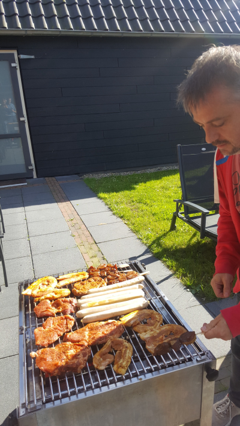 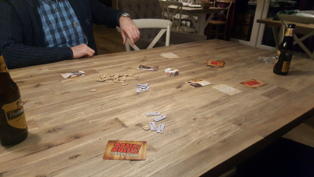
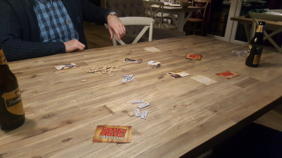


This is why you want to work for us
- We’re not afraid to say it out loud: We’re very, very good
- We decide how we work
- We’re never done learning
- We know the underlying principles of functional programming
- We know the underlying principles of object-oriented programming
- We share our passion at events and at international conferences
We program
We love our job: Programming. At the end of the day, the code is all that matters. We write that code. Clean code, that works. We program Scala, but also Typescript, JavaScript and sometimes Haskell. We’re multilingual and we’re not afraid to learn new languages.
Our choice


 
The digital world offers endless possibilities. The challenges are often complex. We develop state-of-the-art software that’s simple to use. Agile and productive, using the latest techniques. We program with our hearts and with our minds, for organisations looking to take the next step.
We are the #1 partner for Full Stack Scala and Big Data solutions in the Netherlands. We are Codestar.
I want to program
I want to take the next step
Time to take
the next step
Now more than ever, IT is the carrier, deliverer and enricher of your business. You will quickly fall behind without an outstanding digital infrastructure. With data in abundance, where do you start? In the past, if someone asked you for water, you grabbed a bucket and went to the well. Today, we’re dealing with a waterfall of data. Good luck with your bucket.
Fortunately, the growth in the amount of data has coincided with the development of technologies to work with that data. The modern internet, mobile phone use and the ‘Internet of Things’ demands more. At , we use Scala, Front-end and BigData technologies to create state-of-the-art software which enables you to confront challenges head on. Whether you need a bigger bucket, more buckets or just a decent pipeline, we can create it for you.
, we use Scala, Front-end and BigData technologies to create state-of-the-art software which enables you to confront challenges head on. Whether you need a bigger bucket, more buckets or just a decent pipeline, we can create it for you.

Why what we do does work


Cases
About SKG
SKG, Stichting Kerkelijk Geldbeheer, offers financial services specifically tailored for churches and ecclesiastical organisations. Via SKG Online, the foundation offers a unique financial application for churches and ecclesiastical organisations, tailored to the division of tasks and working methods in such organisations. SKG Online offers the functionalities their clients expect, such as debit, payment and savings. In addition, organisations can indicate precisely which actions their employees are authorised to carry out within the system, right up to account level. For instance, an extra digital signature may be necessary for large amounts.
The current outdated platform was completely custom developed in-house for SKG, including hosting and physical servers. SKG is looking for a new payment platform that supports apps and modern devices, enables them to go live quickly with new features and is easier to manage. Codestar is building SKG a new reactive platform that scales and is easy to maintain. The platform is future-proof thanks to the use of technologies such as Microservices, Platform as a Service and Continuous Delivery.
About the system
We are writing the back-end of the system in Scala. The Play! framework provides the basis for a scalable platform that can deal with heavy traffic loads. Scala is expressive and makes it possible to set up detailed data models quickly and simply. This enabled us to write up the unique workflows and business rules of SKG Online in an extremely compact, readable and low-maintenance manner. That means fewer errors in the software and shorter development times. And it was easy to integrate a number of recently developed pieces of Java software.
On the front-end, thanks to TypeScript we were able to achieve the same benefits in terms of robustness and development speed. The latest version of Angular framework enabled us harness the full power of TypeScript. This widely supported framework is future proof. Using reactive programming, we can build advanced user interfaces without any compromises on the system management front.
And thanks to continuous delivery and the latest container-technologies, we can deliver new functionalities in a streamlined, fast and consistent manner. Without any downtime. So SKG will be able to respond quickly to any changes in the future.
Technology stack
- Play!
- Slick
- Akka
- Postgres
- Angular 2
- TypeScript
- Docker
- DCOS
- Circle CI
About the Port of Rotterdam
The Port of Rotterdam is the largest port in Europe. To maintain this position and to facilitate continued growth, the IT systems the port’s stakeholders use to exchange data need to be smarter. The Rotterdam Logistics Lab plays a major role in this effort, by devising and trying out smart solutions to accelerate this transformation. The projects on this front are aimed at improving efficiency and safety by combining and enriching the event-data of Port of Rotterdam stakeholders in a smart fashion. These enrichments are near real-time and predictive.
The Rotterdam Logistics Lab is the Port of Rotterdam’s innovation lab. Via the lab, the Port quickly develops new potential products for its stakeholders using the latest technologies. Codestar helps the Port of Rotterdam by quickly developing these initiatives into real-life products. Our agile and effective working method is a perfect match for the MVP dynamics of the innovation lab. And our extensive knowledge of near real-time reactive technologies and this predictive stream-based processing are perfectly suited to meet the technical challenges of these projects.
Technology stacks
- Scala, Play!, Akka, RxScala, Spark, Slick, React native, Heroku and
- Scala, Akka Persistence, Akka Streams, Play, React and Typescript on AWS Elastic Beanstalk and AWS Dynamodb
About ING
ING: the bank as an IT company with a banking license. ING wants to be the world leading innovator on financial technology and offers an atmosphere that is attractive to developers. More than 300 developers work on varying aspects of ING's online presence. To support this ING has embraced the Spotify agile model and DevOps, making each team responsible for the business and IT side of one or more applications.
Codestar is working on ING’s online appointment scheduling service: the first straight-through appointment service for a bank in The Netherlands. Customers, prospects and employees can schedule an appointment online with a financial advisor with the right skills to handle their specific need (mortgage, financial advice).
The system substantially improves the conversion rate and thereby the sales funnel. This is a key IT project within assisted channels (financial advisory at ING offices) which will form the technical backbone in future contact between ING and its clients or prospects.
About the system
The system integrates with the Exchange calendars of 1300 advisors, meeting rooms in 250 branch offices, and other appointment scheduling systems in the bank to do near real-time checks for availability to optimize the customer experience. The backend uses Scala, Cassandra and asynchronous programming techniques to create a scalable platform so its use can be expanded to other countries.
ING firmly believes in the promise of standardized component driven development and a universal design language for front-end development. ING has adopted web components (Polymer) and Material Design to make the ING front-end stack ready for years to come. The appointment scheduling service is part of the world-wide ING transition from AngularJS to Polymer.
Codestar supplies the full-stack expertise and a broad knowledge of platforms to support the maintenance of the appointment scheduling system and the migration to the new platform.
Technology stack
- Scala
- Finagle
- Cassandra
- Phantom DSL
- AngularJS
- Polymer


Your e-mail is sent succesfully!
We try to reply to you as soon as we can. But give us some time to make a nice reply.
Something went wrong while sending your e-mail.
Sometimes the universe just has a bad mood, but maybe there are some field not filled in correctly?
Contact
Looking for the best programmers? Time to take the next step? You’re on the contact page, so you should be able to find us.
| CODESTAR@ORDINA.NL | Send email | |
| +31 30 6637000 | Call us | |
| RINGWADE 1, 3439 LM NIEUWEGEIN | Visit us |